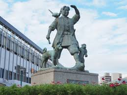
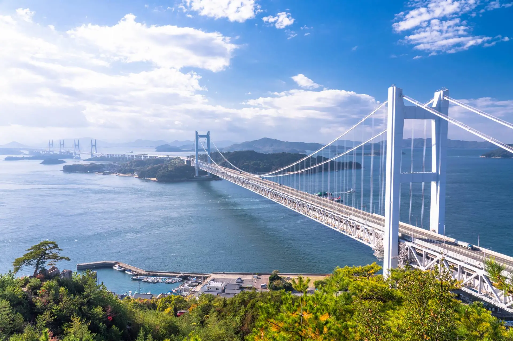
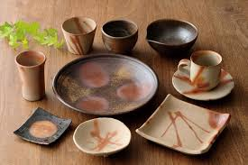

岡山県の基本的な情報をわかりやすく紹介します。地理・文化・有名人など、知れば知るほど岡山の魅力を感じられる内容です。県の特徴を理解するための入門ガイドとしてご活用ください。
岡山県の南部には瀬戸内海と多くの島々が広がり、北部は山々と自然が豊かで、同じ県内でもガラッと雰囲気が変わるのが特徴です。南部には四国とつながる瀬戸大橋もあり、景色だけではなくアクセスの良さも魅力です。気候は温暖で雨が少なく、「晴れの国」と呼ばれています。降水量の少なさは全国トップクラスで、洗濯物がよく乾く県としても知られています。

岡山県は、古くから受け継がれてきた歴史や伝統がいろいろ残っています。例えば。備前市で作られる備前焼は、日本六古窯の一つに数えられる陶芸として有名で、シンプルだけど奥深いデザインが特徴です。
そして、伝統だけじゃなく新しいお祭りも人気です。中でも有名なのが、夏に岡山市で行われる「うらじゃ」。カラフルな衣装を着た踊り手たちが音楽に合わせて市内を歩き、掛け声で一気に盛り上がります。地元の人も観光客も一緒に楽しめるのが魅力です。

Page2です